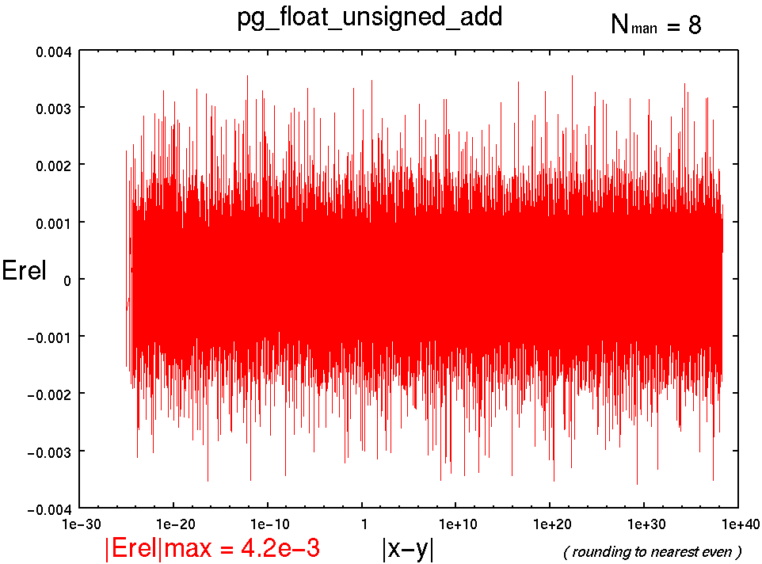
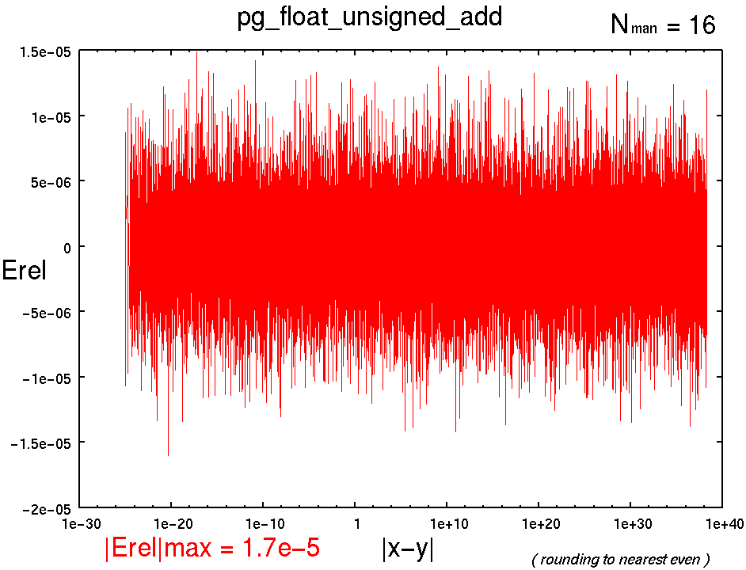
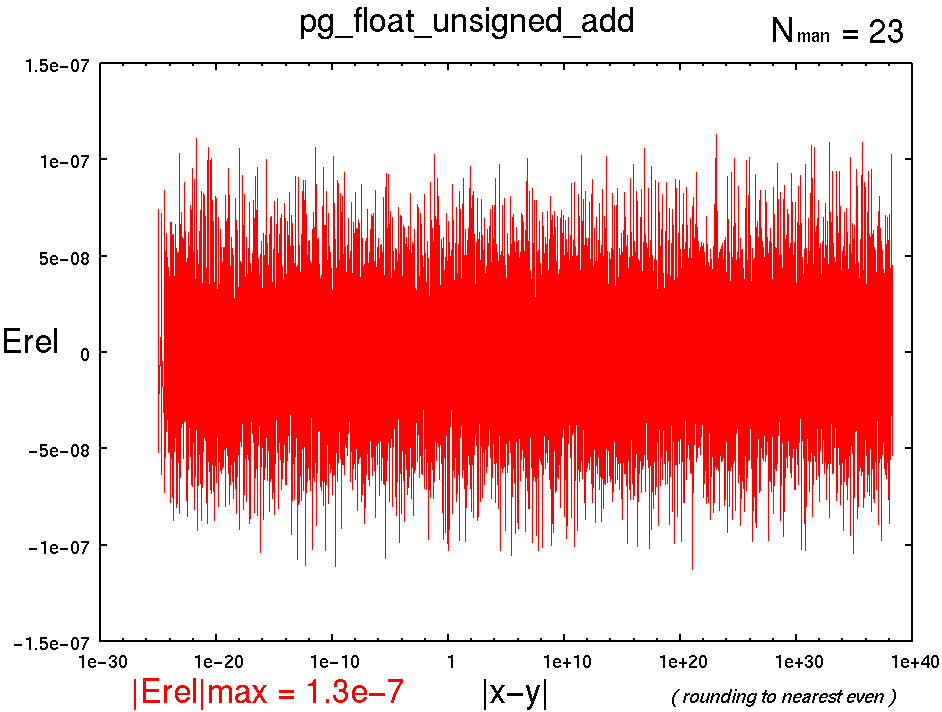

[↑TOP]
pg_float_unsigned_add : 浮動小数点型 符号なし加算
書式
pg_float_unsigned_add(x, y, z, NFLO, NMAN, NST,RM);
引数
- x
- : 入力
- y
- : 入力
- z
- : 加算結果
- NFLO
- : 浮動小数点ワードビット幅
- NMAN
- : 仮数部(精度)ビット幅
- NST
- : パイプラインステージ数
- RM
- : 丸めモード(省略可) 全9種類. 省略時はTOEVEN.
記述例
pg_float_unsigned_add(x, y, z, 18, 8, 3, 0);
pg_float_unsigned_add(x, y, z, 26, 16, 3);
pg_float_unsigned_add(x, y, z, 33, 23, 3, 0);
概要
x,yとの加算結果をzに渡す.
また, x,yは同符号とする.
パイプラインマップ
NST 1 : 1[-] 2[-] 3[-] 4[-] 5[-] 6[-] 7[-] 8[-] 9[O]
NST 2 : 1[-] 2[-] 3[-] 4[O] 5[-] 6[-] 7[-] 8[-] 9[O]
NST 3 : 1[-] 2[O] 3[-] 4[O] 5[-] 6[-] 7[-] 8[-] 9[O]
NST 4 : 1[-] 2[O] 3[-] 4[O] 5[O] 6[-] 7[-] 8[-] 9[O]
NST 5 : 1[O] 2[O] 3[-] 4[O] 5[O] 6[-] 7[-] 8[-] 9[O]
NST 6 : 1[O] 2[O] 3[O] 4[O] 5[O] 6[-] 7[-] 8[-] 9[O]
性能(Xilinx Virtex-II PRO XC2VP70-5FF1517C)
----------------------------------------------------------------------------------------
pg_float_unsigned_add(x, y, z, 18, 8, NST, 0);
NFLO=18
NMAN= 8
RM=0
NST, MHz , Cpath, Slices, FFs, LUTs
1 , 68.919, 0-9 , 116, 18, 210
2 , 98.872, 0-4 , 129, 66, 236
3 , 139.880, 0-2 , 123, 104, 225
4* , 139.880, 0-2 , 124, 132, 219
5 , 174.368, 2-4 , 156, 186, 220
6 , 223.314, 1-2 , 155, 198, 244
(* : not efficient)
----------------------------------------------------------------------------------------
pg_float_unsigned_add(x, y, z, 26, 16, NST);
NFLO=26
NMAN=16
RM=6
NST, MHz , Cpath, Slices, FFs, LUTs
1 , 49.603, 0-9 , 243, 26, 440
2 , 84.591, 0-4 , 254, 106, 468
3 , 94.091, 4-9 , 254, 157, 469
4 , 134.608, 0-2 , 248, 204, 456
5 , 137.760, 3-4 , 268, 277, 458
6 , 142.086, 5-9 , 279, 301, 491
7 , 186.185, 4-5 , 299, 333, 507
----------------------------------------------------------------------------------------
pg_float_unsigned_add(x, y, z, 33, 23, NST, 0);
NFLO=33
NMAN=23
RM=0
NST, MHz , Cpath, Slices, FFs, LUTs
1 , 50.113, 0-9 , 524, 33, 848
2 , 73.944, 0-4 , 585, 163, 878
3 , 128.634, 0-2 , 570, 272, 881
4* , 128.634, 0-2 , 570, 306, 879
5 , 143.369, 2-4 , 621, 390, 881
6 , 192.715, 1-2 , 627, 400, 915
7* , 192.715, 1-2 , 646, 433, 915
(* : not efficient)
(4* : NMAN16に最適化されたPipelineMapを使っているため, どうせNMAN23なんてつかわねぇし)
(NST3以降がNMAN16よりも速いのは丸めの違いです)
演算精度 |Erel|max
-
pg_float_unsigned_add(x, y, z, 18, 8, NST, 6);
|Erel|max = 4.2e-3

-
pg_float_unsigned_add(x, y, z, 26, 16, NST, 6);
|Erel|max = 1.7e-5

-
pg_float_unsigned_add(x, y, z, 33, 23, NST, 6);
|Erel|max = 1.3e-7

参照
Change Log
- 2004.10.27 : 精度グラフ追加
- 2004.10.10 : the first edition by T. Hamada
{kind=link}
{kind=link}
{kind=link}